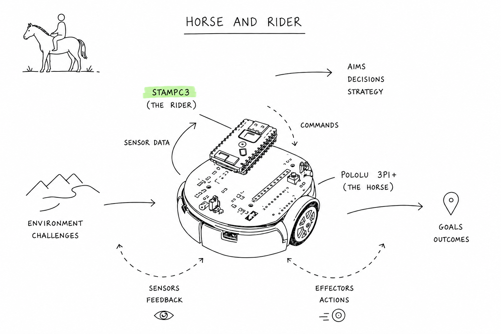
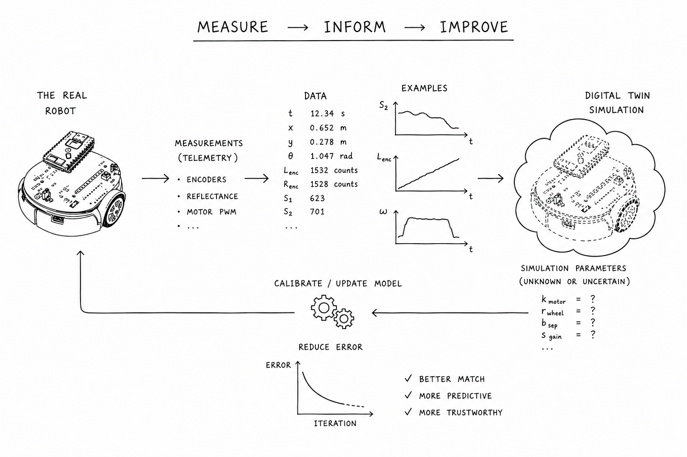
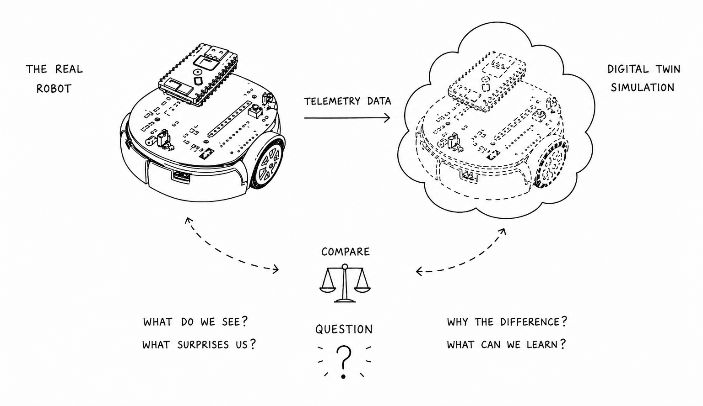

Specialise first.
Then build together.
The coursework has two connected phases. Each team member first develops evidence about one real robot subsystem; the team then combines those specialist findings to improve and evaluate a Digital Twin. From the beginning of the course to the end, you'll be working in a shared context to finally report on the full system when applied to a robotics task.
Characterise the real robot
In Phase 1 of this course you will design tests and experiments to measure the performance characteristics of the real robot. You will use a microcontroller on top of the robot called a StampC3 as the primary tool to take measurements. You will write code for the StampC3 to collect sensor information and send sequences of motor commands to the Pololu 3Pi+ robot.
The StampC3 and the Pololu 3Pi+ robot operate together as a pair. The relationship between the StampC3 and the Pololu 3Pi+ robot is similar to a rider and a horse:

- The horse (Pololu 3Pi+) provides movement and perception. Its supplied middleware operates the motor and sensor electronics. You will not write code for the robot itself or program it directly.
- The rider (StampC3) responds to the robot's information and decides what to request or command next. You will program this controller.
Each team member studies a different subsystem
Your team has three specialist roles: motors, surface reflectance sensors, and odometry. Each team member takes primary responsibility for one distinct subsystem, collecting measurements and developing a supported account of its behaviour. You will bring those complementary findings together in Phase 2.
Your learning outcomes in Phase 1 will be a greater technical understanding of how robotic subsystems function, how their performance can vary, and how we can approach characterising them. You will establish an understanding of designing an experimental methodology relative to known technical and functional expectations.
Update and evaluate the Digital Twin
In Phase 2 of this course, you will transfer your findings from Phase 1 into a simulation of the robot, referred to as a Digital Twin. Your objective is to make your simulator better match the reality of your robot—referred to as correspondence.
Making a perfect model is not possible. Instead, you will want to improve the aspects that matter most. To decide what matters, your team will select a task for the robot to complete both in reality and in simulation. You can then be selective about which Phase 1 measurements to model, and use the task to observe, measure, and evaluate the degree of correspondence.

Your learning outcome in Phase 2 is to construct an evidence-informed argument for which aspects of the robot's behaviour are most important to model in the Digital Twin, and to evaluate how and why discrepancies remain between reality and simulation. This will include a critical reflection on the experimental approach undertaken.
If you observe little or no discrepancy, this may indicate that the selected robot task was too simplistic, or that the experiment was controlled so tightly that it was no longer representative of real-world behaviour. In Phase 2 you will use experimental methodology to acquire new knowledge under uncertainty and complexity.
You will therefore demonstrate the critical thinking required to design experiments that are both scientifically rigorous and sufficiently representative of the behaviour you wish to understand.

Build an argument, not a perfect solution
We are looking for an evidence-informed argument for the merits and insights of the approaches you have taken.